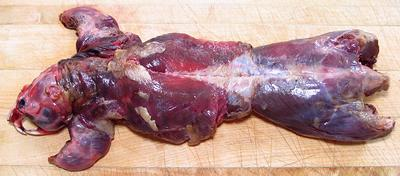

Muskrats are semi-aquatic rodents native to North America, but were introduced into Europe in the early 1900s for their then valuable fur. Since then they have spread all the way from France to Kamchatka and are well established in that range. They have also been introduced to some ranges in South America. They are considered serious pests in Holland and Belgium because they dig big holes in dikes, but otherwise don't seem to be much of a problem.
Not true rats, but related to hamsters and lemmings, muskrats are medium size, weighing up to 4 pounds and about 13 inches long, plus 11 inches of tail. The tail is scaly and flattened, but vertically, not horizontally like the beaver. Muskrats may dig burrows to live in, or may build lodges similar to those of beavers, but made from lighter materials. They are another animal permitted on meatless Fridays and Lent because the Catholic Church has classified them as fish. Muskrats are plentiful and IUCN rated LC (Least Concern). Photo by Alan D. Wilson distributed under license Creative Commons Attribution-ShareAlike v2.5 Generic.
More on Rodents & Rabbits.
Muskrats are native to most of North America, but are particularly favored as a food item in the Great Lakes region and the Northeast from Virginia through Maine. They were considered a very important animal by the American Indians in those regions, and are still eaten by the regional tribes. Most muskrat stew recipes are directly related to American Indian practices.
The steps given here are a little tedious, but I have read reports by persons who tried to cook muskrat without going through them all, and suffered the consequences.
 Buying: Muskrats are most commonly available frozen. In some regions frozen Muskrat may be provided by fish markets. Here in Southern California, I purchased the photo specimen from Hawaii Supermarket, a large Asian market in Los Angeles (San Gabriel), but Muskrat is not a common item there. It was frozen, tightly wrapped in heavy plastic film. The photo to the left shows the specimen after thawing. It weighed 1.84 pounds and cost 2016 US $8.99 / pound.
In some regions Muskrats can be purchased directly from trappers, generally skinned and gutted, but not otherwise cleaned. The season varies from state to state, but is roughly November 1st to February 28th. In some locations muskrat festivals are held during this period.
Skinning, etc: Preparing a whole skin-on muskrat is a little complicated, because the musk glands must be removed without breaking them, and all fat must be removed, especially fat on the underside of the four legs. Unfortunately I've found very little good information on the Internet for skinning muskrats for food rather than fur. Southern California is completely devoid of muskrats, so I have not had the opportunity to work with them. Just work carefully.
Final Cleaning: Commercially frozen muskrat probably has the musk glands removed, but if obtained directly from a trapper the beast will be skinned and gutted, but nothing further. In either case, it is important to carefully remove anything that looks like a gland, particularly under the front legs and near the back legs and internally. Remove any and all fat and any other white material. I use my fish filleting knife for this, as it has the razor sharpness and delicacy to do the job quickly and precisely. Should a musk gland be broken and contaminate the meat, it takes about 3 days of soaking in many changes of salt water to make it edible.
Cutting: Disjoint the Muskrat and cut into pieces the size you want, but not too small or bones will be difficult to deal with on the plate. A razor sharp Chinese cleaver knife driven by a soft faced mallet works best for some of the cuts. In Indian tribes, the muskrat is often just tossed in the pot, head-on and "teeth showing", with other ingredients loaded over it. I prefer to remove the head for aesthetic reasons, especially if serving guests.
Soaking: Wash the Muskrat well. You will soon notice that blood continues to seep out and the wash water never runs clean. Once you have much reduced the color of the water, put the Muskrat in a stainless steel pot. Add water to just cover, and a heaping tablespoon of salt. Set it in a cool place and let it sit overnight. I prefer to do one change of the salt water during this time, but most recipes don't call for that.
Par Boiling: Drain the Muskrat and wash well. Put in a pot with plenty of water to cover well. Over high heat, bring it to a boil for about 2 minutes. Pour out and refresh with cold water. Wash the Muskrat (and the pot) well.
Holding: Since I have done the par boiling in the morning after the overnight soak, and I intend to cook the muskrat in the evening, I drain it well and pack it into a sealed plastic bag, which I put in the fridge.
The Muskrat is now "recipe ready". To get you started, here is our
Muskrat Stew recipe.